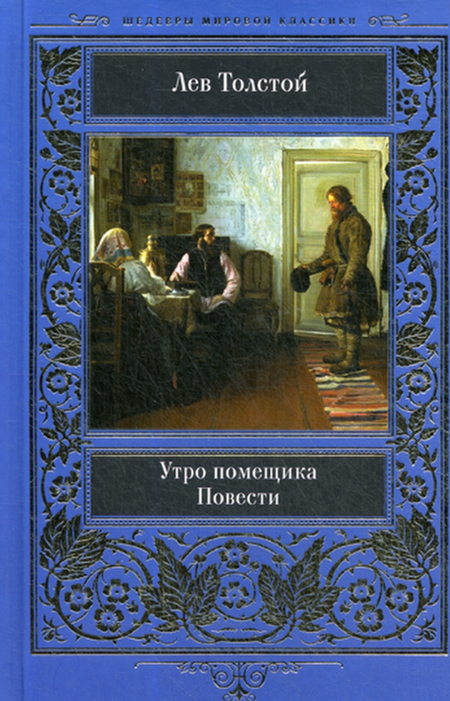
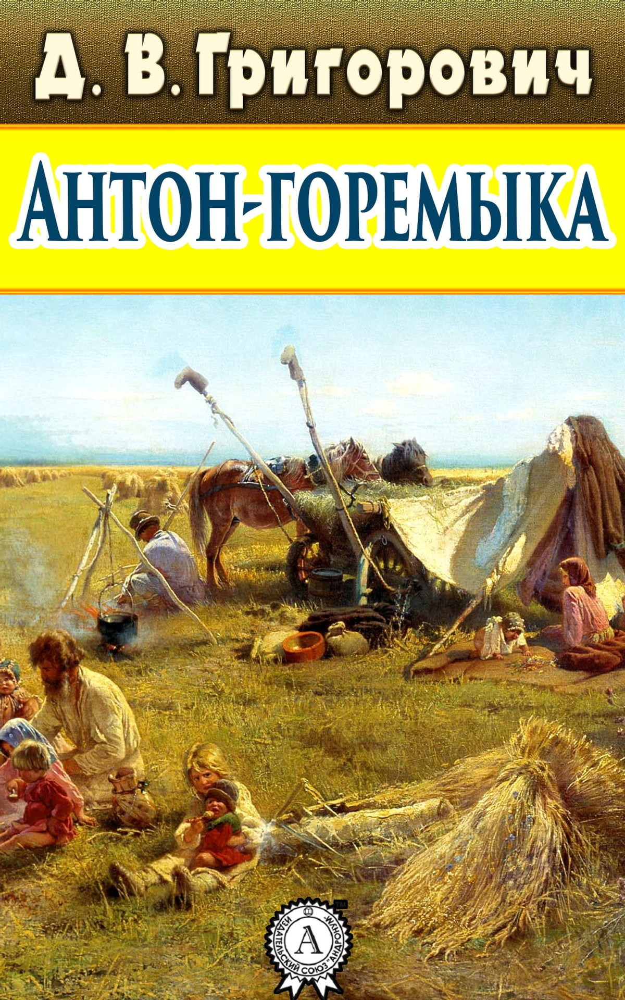
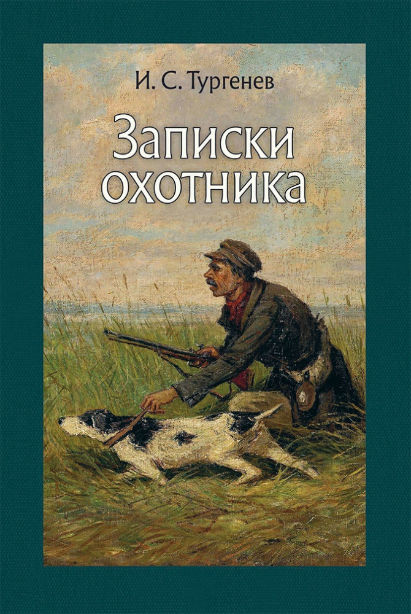
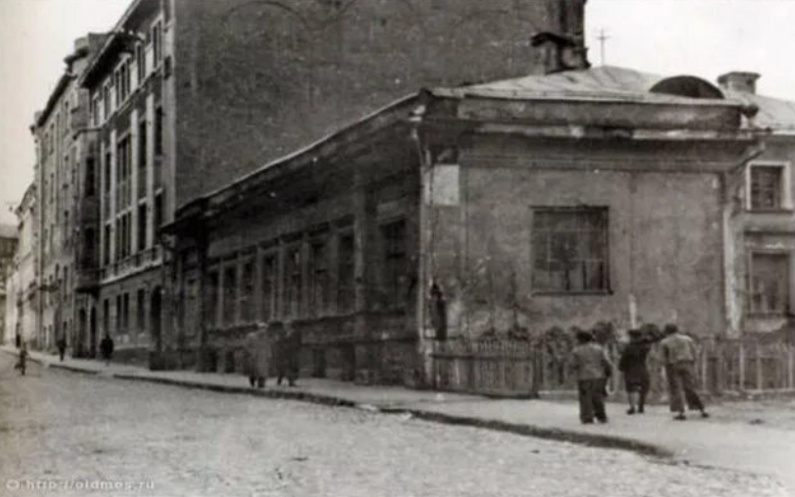
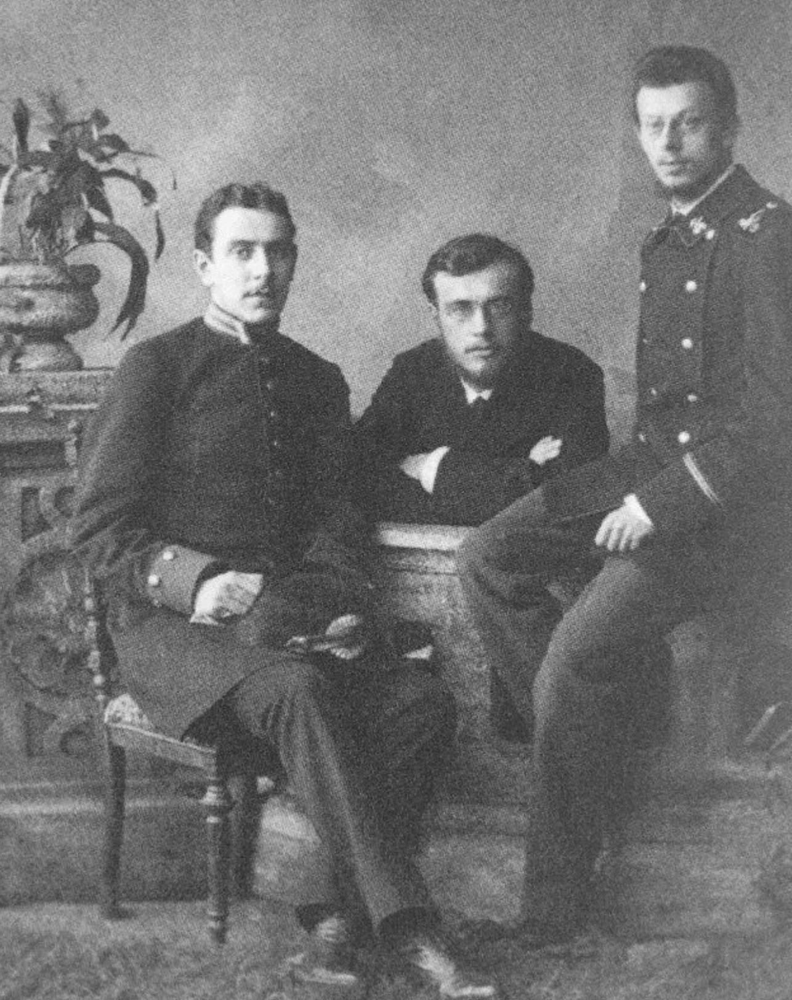

Начало литературной деятельности

: Толстой пытался наладить
по-новому отношения с крестьянами.
Его попытка чем-нибудь сгладить вину барства перед народом относится к тому же году, когда появились «Антон Горемыка» Григоровича

и начало «Записок охотника»Тургенева.

В своём дневнике Толстой ставит себе огромное количество целей и правил; удавалось следовать лишь небольшому числу их. Среди удавшихся — серьёзные занятия английским языком, музыкой, юриспруденцией. Кроме того, ни в дневнике, ни в письмах не отразилось начало занятия Толстым педагогикой и благотворительностью, хотя в 1849 году он впервые открыл школу для крестьянских детей. Основным преподавателем был Фока Демидыч, крепостной, но и сам Лев Николаевич часто проводил занятия.
В середине октября 1848 года Толстой уехал в Москву, поселившись в районе, где проживали его многие родственники и знакомые, — в районе Арбата. Он остановился в доме Ивановой на Николо-Песковском переулке.

В Москве он собирался начать подготовку к сдаче кандидатских
экзаменов, однако, занятия так и не были начаты. Вместо этого его привлекла совсем другая
сторона жизни — светская жизнь. Кроме увлечения светской жизнью, в Москве у Льва Николаевича
в зиму 1848—1849 годов впервые появилось увлечение карточной игрой. Но, так как он играл
весьма горячо, порывисто, и не всегда обдумывая свои ходы — часто проигрывал.
Уехав в Петербург в феврале 1849 года, проводит время в кутежах с К. А. Иславиным

— дядей
своей будущей жены («Любовь моя к Иславину испортила для меня целых 8 месяцев жизни в
Петербурге»). Весной Толстой начал держать экзамен на кандидата прав; два экзамена, из
уголовного права и уголовного судопроизводства, сдал благополучно, однако третий экзамен
он сдавать не стал и уехал в деревню Позднее приезжал в Москву, где часто проводил время в азартных играх, что нередко отрицательно сказывалось на его финансовом положении. В этот период жизни Толстой особенно страстно интересовался музыкой (он сам неплохо играл на рояле и очень ценил любимые произведения в исполнении других). Увлечение музыкой побудило его к написанию «Крейцеровой сонаты».

Любимыми композиторами Толстого были Бах, Гендель и Шопен. Развитию любви Толстого к музыке содействовало и то, что во время поездки в Петербург в 1848 году он встретился в весьма мало подходящей обстановке танцкласса с даровитым, но сбившимся с пути немцем-музыкантом, которого впоследствии описал в «Альберте». В 1849 году Лев Николаевич поселил у себя в «Ясной Поляне» музыканта Рудольфа, с которым играл в четыре руки на рояле. Увлёкшись в то время музыкой, он по нескольку часов в день играл Шумана, Шопена, Моцарта, Мендельсона. В конце 1840-х годов Толстой в соавторстве со своим знакомым, Зыбиным, сочинил вальс, который в начале 1900-х годов исполнил при композиторе Танееве, сделавшем нотную запись этого музыкального произведения (единственного, сочинённого Толстым). Много времени уходило также на кутежи, игру и охоту.
Через 4 года после того, как он оставил университет, в Ясную Поляну приехал служивший на Кавказе брат Льва Николаевича Николай, который пригласил младшего брата присоединиться к военной службе на Кавказе. Лев согласился не сразу, пока крупный проигрыш в Москве не ускорил окончательное решение Биографы писателя отмечают значительное и положительное влияние брата Николая на юного и неопытного в житейских делах Льва. Старший брат в отсутствие родителей был ему другом и наставником.